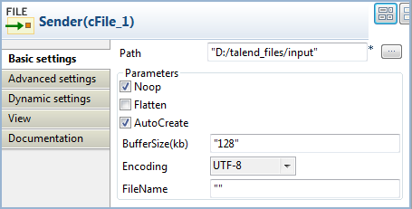
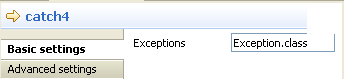
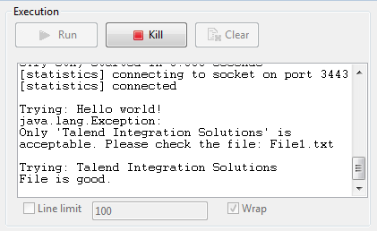

|
Famille de composant |
Exception | |
|
Fonction |
Le composant cTry permet de gérer des exceptions Java, en construisant des blocs Try/Catch/Finally. | |
|
Objectif |
Le cTry est conçu pour construire des blocs Java Try/Catch/Finally pour gérer les exceptions. | |
|
Utilisation |
Le cTry est généralement comme composant intermédiaire dans une Route. | |
| Connections | Try | Sélectionnez ce lien pour isoler la partie de votre Route pouvant générer une ou des exception(s). NoteQuand le lien Try est suivi par de multiples
composants, l'erreur de compilation suivante peut apparaître
: " |
| Catch | Sélectionnez ce lien pour capturer l'exception ou les exceptions. Dans le champ Exceptions, saisissez l'exception à capturer. NoteCe lien peut être utilisé uniquement lorsqu'un lien Try est utilisé pour isoler une partie d'une Route pouvant générer une ou des exception(s). | |
| Finally | Sélectionnez ce lien pour exécuter les instructions finales sans tenir compte des exceptions pouvant surgir dans le bloc Try et/ou dans le bloc Catch. NoteCe lien peut être utilisé uniquement lorsqu'un lien Try est utilisé pour isoler une partie d'une Route pouvant générer une ou des erreur(s). | |
| Route | Sélectionnez ce lien pour router tous les messages de l'émetteur vers l'endpoint suivant. | |
|
Limitation |
n/a | |
Dans ce scénario, le contenu de chaque fichier envoyé depuis l'émetteur du message vers le récepteur est vérifié et, si un fichier ne répond pas aux conditions de contenu, une exception est retournée et les informations correspondantes sont affichées dans la console.
Du dossier Messaging de la Palette, déposez deux composants cFile dans l'espace de modélisation graphique, un comme émetteur de messages et un comme récepteur de messages.
Du dossier Exception, déposez un composant cTry dans l'espace de modélisation graphique pour construire des blocs Try, Catch et Finally.
Du dossier Processor, déposez deux cProcessor dans l'espace de modélisation graphique.
Reliez le cFile émetteur de messages au composant cTry à l'aide d'un lien Row > Route.
Reliez le cTry à l'un des cProcessor à l'aide d'un lien Row > Try. Ce composant cProcessor va retourner une exception si un fichier provenant de cette connexion n'a pas le contenu requis.
Reliez le composant cTry à l'autre composant cProcessor à l'aide d'un lien Row > Catch pour retourner l'exception. Ce cProcessor va afficher les informations relatives à l'exception ainsi que le nom de fichier n'ayant pas le contenu requis.
Reliez le cTry au composant cFile récepteur, à l'aide d'un lien Row > Finally.
Renommez les composants selon leur rôle dans la Route.
Double-cliquez sur le composant cFile nommé Sender pour ouvrir sa vue Basic settings.
Dans le champ Path, saisissez le chemin d'accès au dossier contenant les fichiers source ou parcourez votre système jusqu'à ce dossier.
Dans la liste Encoding, sélectionnez le type d'encodage de vos fichiers source. Laissez les autres paramètres tels qu'ils sont.
Répétez ces étapes pour définir le chemin d'accès au fichier de sortie ainsi que le type d'encodage dans la vue Basic settings de l'autre composant cFile nommé Receiver.
Double-cliquez sur le cProcessor nommé Throw_exception pour ouvrir sa vue Basic settings et personnaliser le code dans la zone Code afin de retourner une exception et afficher les informations correspondantes si un fichier provenant de la connexion try ne répond pas aux conditions de contenu, comme suit :
String body = exchange.getIn().getBody(String.class); System.out.println("\nTrying: "+body); Exception e = new Exception("Only 'Talend Integration Solutions' is acceptable. Please check the file:"); if(!"Talend Integration Solutions".equals(body)){ throw e; }else{ System.out.println("File is good."); }Cliquez sur la connexion catch puis sur l'onglet Component pour ouvrir sa vue Basic settings et saisissez dans le champ Expression une expression pour spécifier le type d'exception à capturer.
Dans ce scénario, saisissez
Exception.classpour capturer toute exception retournée.Double-cliquez sur le composant cProcessor nommé Show_exception pour ouvrir sa vue Basic settings et personnaliser le code dans la zone Code pour afficher les informations de l'exception et le nom de fichier associé, comme suit :
System.out.println(exchange.getProperty("CamelExceptionCaught")+ " " + exchange.getIn().getHeader("CamelFileName"));Cliquez sur Ctrl+S pour sauvegarder votre Route.
Cliquez sur l'onglet Code au bas de l'espace de modélisation graphique afin de visualiser le code généré.

Comme affiché ci-dessus, les messages sont routés de (
from) l'émetteur vers (.to) le récepteur. Les blocs.doTry(),.doCatch()et.doFinally()sont construits par lecTry_1. Ainsi, lorsqu'un fichier ne répond pas aux conditions de contenu, une exception est retournée et capturée, avant que chaque fichier soit finalement routé vers le récepteur.Appuyez sur F6 pour exécuter la Route.
Résultat : Lorsqu'un fichier ne répondant pas aux conditions de contenu est détecté, une exception est retournée et les informations relatives à l'exception sont affichées dans la console. A part l'exception, tous les fichiers de l'émetteur sont envoyés au récepteur.